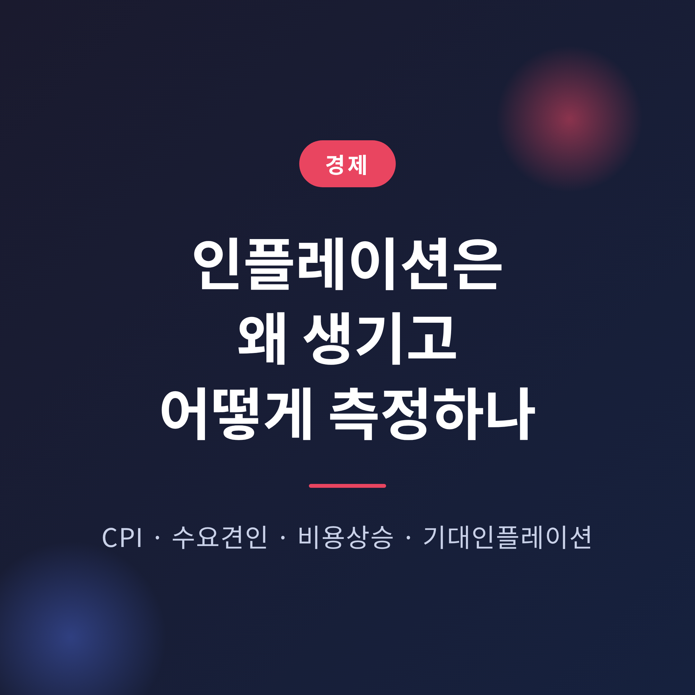
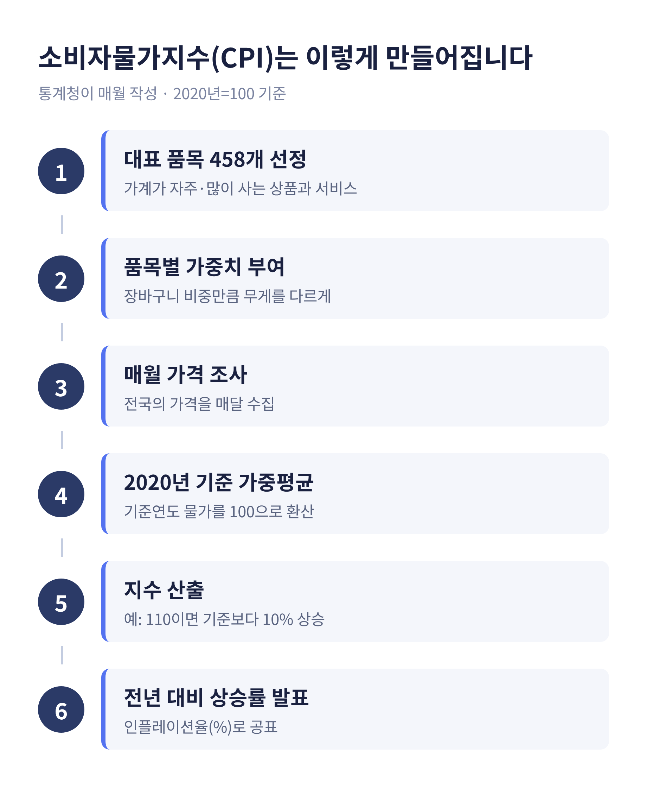
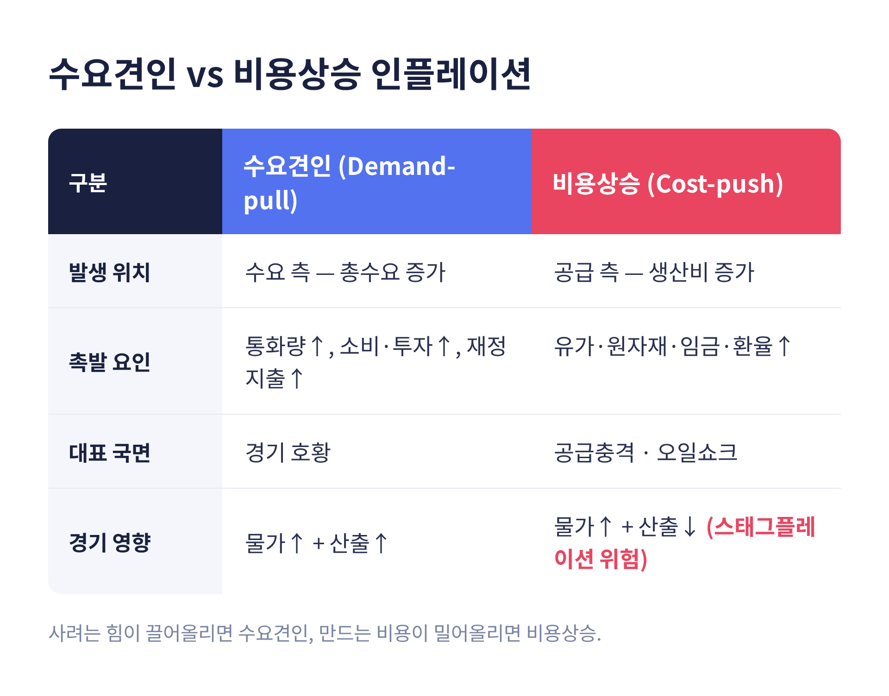
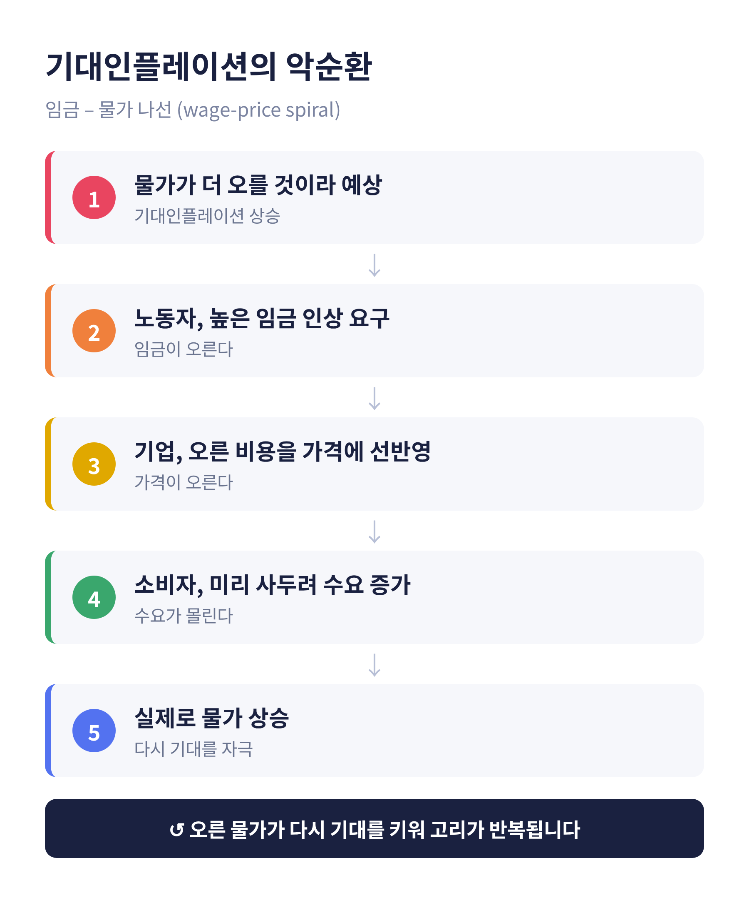
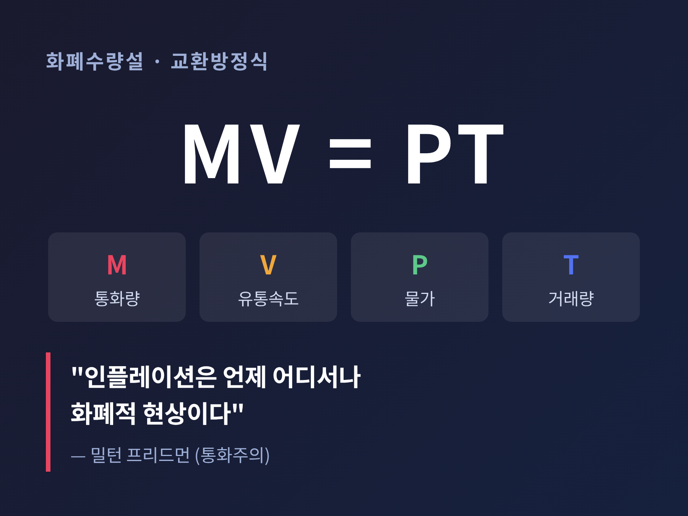
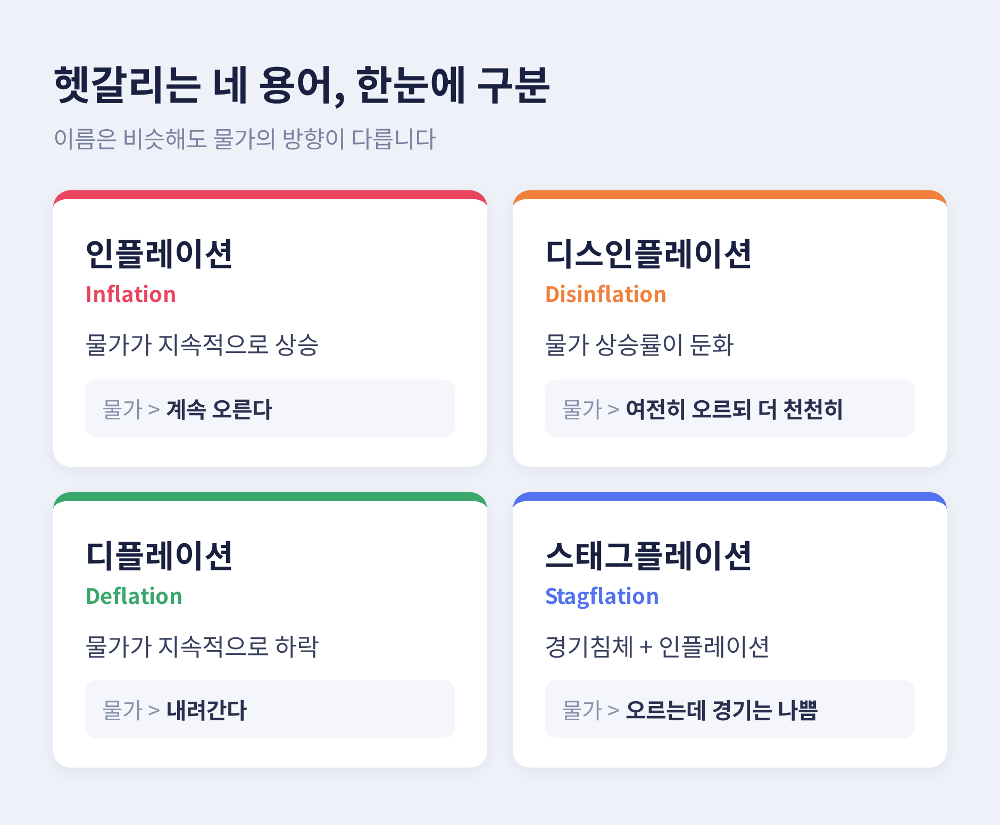

이번 글에서는 인플레이션이 왜 생기고 어떻게 측정하는지를 정리해 보겠습니다.
뉴스에 자주 나오는 소비자물가지수(CPI), 수요견인과 비용상승, 기대인플레이션까지 한 번에 짚어봅니다.
어려운 수식보다 원리를 먼저 이해하는 데 초점을 맞췄습니다.
인플레이션은 물가가 지속적으로 오르는 현상입니다.
사과 한 개, 라면 한 봉지가 오른 게 아니라, 물가 전반이 오르는 것을 말합니다.
여기서 한 가지 뒤집어 볼 점이 있습니다.
물가가 오른다는 말은 곧 돈의 가치가 떨어진다는 뜻입니다.
어제 1만 원으로 사던 것을 오늘은 다 못 산다면, 물건이 비싸진 동시에 내 돈이 가벼워진 셈입니다.
또 하나 짚고 넘어갈 부분이 있습니다.
”물가가 높다”와 ”물가가 계속 오른다”는 다릅니다.
인플레이션은 수준이 아니라 속도에 관한 이야기입니다.
그래서 보통 지난해 같은 달과 비교한 상승률(%)로 나타냅니다.
한국은행은 이 상승률의 목표를 연 2%로 두고 있습니다.
너무 뜨겁지도, 너무 차갑지도 않은 온도를 2%로 본다고 이해하시면 됩니다.
인플레이션을 숫자로 보여주는 대표 지표가 소비자물가지수, CPI입니다.
가계가 살아가며 사는 상품과 서비스의 가격이 얼마나 변했는지를 종합한 값입니다.
우리나라에서는 통계청이 매달 조사해 발표합니다.
만드는 방식은 이렇습니다.

먼저 가계가 자주, 많이 사는 대표 품목 약 458개를 정합니다.
그리고 품목마다 가중치를 다르게 줍니다.
매달 나가는 집세나 통신비는 무겁게, 어쩌다 사는 물건은 가볍게 반영합니다.
장바구니에서 차지하는 비중만큼 목소리를 주는 것입니다.
기준은 2020년입니다.
그해 물가를 100으로 놓고, 지금이 110이면 그때보다 10% 오른 것이 됩니다.
조사원이 매달 전국의 가격을 모아 이 지수를 갱신하고, 지난해 같은 달과 비교해 상승률을 발표합니다.
다만 전체 CPI만 보면 착시가 생길 때가 있습니다.
태풍으로 채솟값이 잠깐 뛰거나 국제유가가 출렁이면 지수가 크게 흔들리기 때문입니다.
그래서 농산물과 석유류처럼 변동이 심한 품목을 뺀 근원물가지수를 함께 봅니다.
일시적 소음을 걷어내고 물가의 밑바탕 흐름을 보려는 것입니다.
중앙은행이 금리를 판단할 때 특히 눈여겨보는 숫자입니다.
인플레이션의 원인은 크게 두 갈래로 나뉩니다.
수요 쪽에서 밀어 올리는 경우와, 비용 쪽에서 밀어 올리는 경우입니다.
먼저 수요견인 인플레이션입니다.
사려는 힘이 물가를 끌어올린다는 뜻에서 '끌 견(牽)'을 씁니다.
경기가 좋아 소득이 늘고, 금리가 낮아 돈 쓰기 편하고, 정부가 지갑을 크게 열면 사려는 사람이 많아집니다.
그런데 물건을 만드는 속도가 그 수요를 못 따라가면 어떻게 될까요.
한정된 물건을 두고 사람이 몰리는 경매장처럼, 값이 오릅니다.
시중에 돈이 많이 풀리는 것도 같은 방향으로 작동합니다.
쓸 돈이 많아지면 수요가 살아나고, 공급이 부족하면 가격표가 올라갑니다.
그래서 수요견인 인플레이션은 대체로 경기가 뜨거운 호황기에 나타납니다.
두 번째는 비용상승 인플레이션입니다.
이번엔 방향이 반대입니다. 만드는 쪽의 비용이 물가를 밀어 올립니다.
원자재값, 유가, 환율, 물류비, 임금, 임대료가 오르면 기업의 부담이 커집니다.
그 부담을 언제까지고 혼자 지기는 어렵습니다.
결국 판매가격에 얹게 되고, 그 순간 비용 상승이 물가 상승으로 번집니다.
교과서적 사례가 1970년대 오일쇼크입니다.
국제유가가 폭등하자 전 세계가 동시에 비용상승 인플레이션을 겪었습니다.
이쪽이 더 까다로운 이유가 있습니다.
수요가 아니라 공급이 위축되기 때문에, 물가는 오르는데 경기는 나빠지는 조합이 생길 수 있습니다.
물가 상승과 경기 침체가 함께 오는 이 상태를 스태그플레이션이라 부릅니다.
가장 다루기 어려운 국면으로 꼽힙니다.

원인을 이야기할 때 빠뜨리면 안 되는 것이 하나 더 있습니다.
바로 사람들의 예상, 기대인플레이션입니다.
기대인플레이션은 가계와 기업이 ”앞으로 물가가 이만큼 오르겠지” 하고 갖는 전망입니다.
한국은행은 매달 약 2,500가구에게 앞으로 1년간 물가가 얼마나 오를 것 같은지를 물어 이 값을 파악합니다.
이 심리가 무서운 이유는 예상이 현실을 만들기 때문입니다.

물가가 더 오를 거라 믿으면 노동자는 임금을 더 올려달라 하고, 기업은 오를 비용을 미리 가격에 얹습니다.
소비자는 더 비싸지기 전에 사두려 하니 수요가 몰립니다.
그 결과 정말로 물가가 오르고, 오른 물가는 다시 기대를 키웁니다.
임금과 물가가 서로 밀어 올리는 이 나선을 끊기가 쉽지 않습니다.
그래서 중앙은행은 이 기대를 2% 부근에 단단히 붙들어 매는 일을 가장 중요하게 여깁니다.
기대가 한번 풀려버리면, 실제 물가를 잡는 데 훨씬 큰 대가를 치러야 하기 때문입니다.
조금 더 근본으로 들어가 보겠습니다.
길게 보면 인플레이션의 뿌리는 결국 '돈의 양'이라는 관점이 있습니다.
교환방정식은 MV = PT로 씁니다.
M은 통화량, V는 돈이 도는 속도, P는 물가, T는 거래량입니다.
돈이 도는 속도와 거래량이 크게 변하지 않는다면, 통화량이 늘어난 만큼 물가가 오른다는 논리입니다.

이 생각을 밀어붙인 사람이 밀턴 프리드먼입니다.
그는 ”인플레이션은 언제 어디서나 화폐적 현상”이라는 말을 남겼습니다.
경제가 자라는 속도보다 돈을 빨리 찍으면 물가가 오른다는 것입니다.
물론 한계도 인정해야 합니다.
현실에서는 돈이 도는 속도가 늘 일정하지 않아, 통화량과 물가가 단기적으로 딱 비례하지는 않습니다.
그럼에도 오랜 기간을 놓고 보면 통화 요인이 인플레이션의 큰 동력이라는 데에는 무게가 실립니다.
마지막으로 이름이 비슷해 자주 섞이는 용어를 갈라놓겠습니다.

디스인플레이션은 물가 상승률이 낮아지는 것입니다.
5%에서 3%로 오름세가 꺾이는 것이지, 물가가 내려가는 것이 아닙니다.
여전히 오르되 더 천천히 오르는 상태입니다.
디플레이션은 물가가 아예 내려가는 것입니다.
값이 싸지니 좋아 보이지만 함정이 있습니다.
”더 기다리면 더 싸지겠지” 하며 소비와 투자를 미루게 만들어, 경기를 얼어붙게 할 수 있습니다.
스태그플레이션은 앞서 말한, 침체와 인플레이션이 겹친 상태입니다.
물가를 잡자니 경기가 더 나빠지고, 경기를 살리자니 물가가 더 오르는 딜레마가 여기서 생깁니다.
한 가지 덧붙이면, 인플레이션의 비용도 결코 가볍지 않습니다.
현금을 쥔 사람의 구매력이 깎이고, 가격표를 바꿔 다는 메뉴비용, 현금을 자주 옮기는 구두창비용이 사회 전체에 쌓입니다.
그래서 물가를 잡는 일은 단순한 숫자 관리가 아닙니다.
정리하면 이렇습니다.
인플레이션은 수요가 끌거나 비용이 밀어서 생기고, 사람들의 기대가 그 불씨를 키웁니다.
그리고 우리는 그 온도를 CPI라는 온도계로 잽니다.
”물가를 읽는다는 것은 결국 돈의 가치를 읽는 일이다.”
다음에 뉴스에서 소비자물가 상승률을 보게 되신다면, 숫자 뒤에 있는 이 원리들을 함께 떠올려 보시면 좋겠습니다.